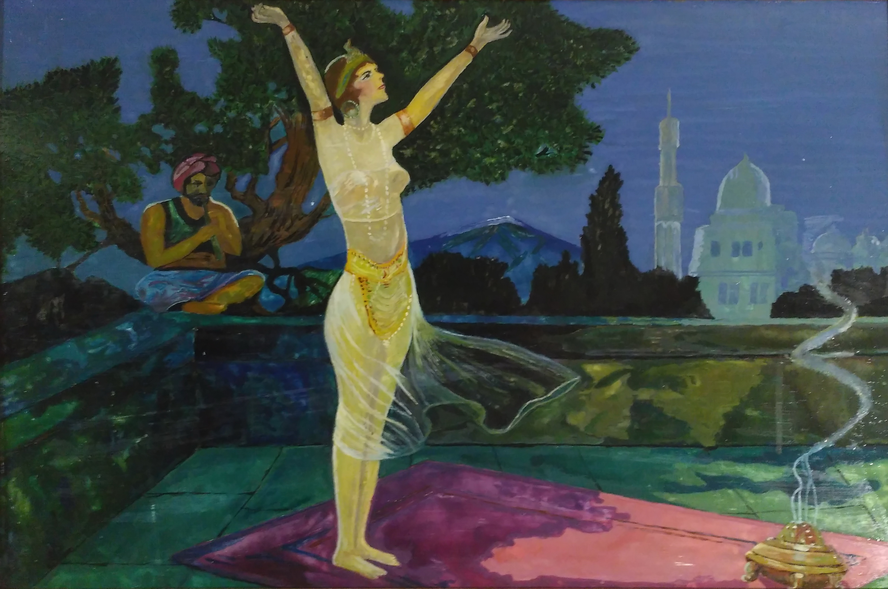

Влечет Восток сияньем красок,
Зовет базарной суетой,
С Али-бабой, героем сказок,
С Синдбадом, брошенным волной.
Там Шахрезада начинает
Для падишаха свой рассказ,
Багдадский вор там убегает,
Торговцев обманув не раз.
На ослике, качаясь едет,
Ходжа мудрейший - Насреддин,
И вынув лампу вызывает
Седого джинна Алладин.
Там средь дворцов и минаретов
В саду Ширин скучая ждет,
Когда Фархад любви навстречу,
В скале родник воды пробьет.
Там поднимаясь на барханы,
Стремясь пустыни перейти,
Идут с востока караваны,
Сходясь на Шелковом пути.
Тамила-Бахира Колодий
